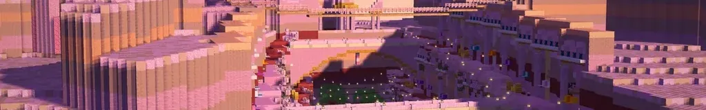

Het Zijdeland zone 6
AreasGebieden
| AreaGebied | Level | SecretsGeheimen | CampfiresKampvuren |
|---|---|---|---|
| Rozenkloof ⚑ | 60-60 | 2 | 2 |
| De Roze Duinen | 60-62 | 1 | 2 |
| Saffraanpoort ⚑ | 62-62 | 4 | 2 |
| De Palmenkloven | 62-64 | 1 | 2 |
| De Zoutvlakte | 64-66 | 2 | 2 |
| Het Ruïnedal | 66-68 | 1 | 2 |
| De Moederoase | 68-70 | 1 | 2 |
| De Sterrendovende Toren | 70-70 |
BossesBazen


CreaturesWezens
Duinkruiper, Fennekguh, Mika-Lampendover, Springpiep, Zandvlooi, Dadelaapje, Gierguh, Spiegelslang, Zoutkreeft, Zandgeestje, De Zoutslang, Mika-Ringdrager, Ruïnewachter, Gedoofd sterretje
Main storyHoofdverhaal
- Land in zicht! lv 60
- De karavaan van Oma Dadel lv 60
- Door de Roze Duinen lv 61
- Audiëntie bij Sultane Rozijntje lv 62
- Het Palmbaken lv 62
- Een tapijt van sterrenzijde lv 63
- De Zoutvlakte bij nacht lv 65
- De Verzonken Sterrenwacht lv 67
- De Spiegelzaal lv 68
- De Moederoase lv 69
Side questsZijquests
- Bobbeltjes verjaardag Side questZijquest
- Water voor de hangende tuinen Side questZijquest
- Post in de rots Side questZijquest
- De verloren tapijtkwastjes Side questZijquest
- Afdingen! Side questZijquest
- De norias zingen niet meer Side questZijquest
- Badeendjes in de Kanaalwijk Side questZijquest
- Sterrenkijkersexamen Side questZijquest
- De Dadelapenbende Side questZijquest
- Watervalkoerier Side questZijquest
- Zout op de staart Side questZijquest
- Het lied van de Zoutgrot Side questZijquest
- Koningin Wormelien Side questZijquest
- De tabletten van de Sterrenguhs Side questZijquest
- Vluchtelingen langs de Oostroute Side questZijquest
Sets
This zone is hidden by your spoiler setting (top right).Deze zone is verborgen door je spoilerinstelling (rechtsboven).